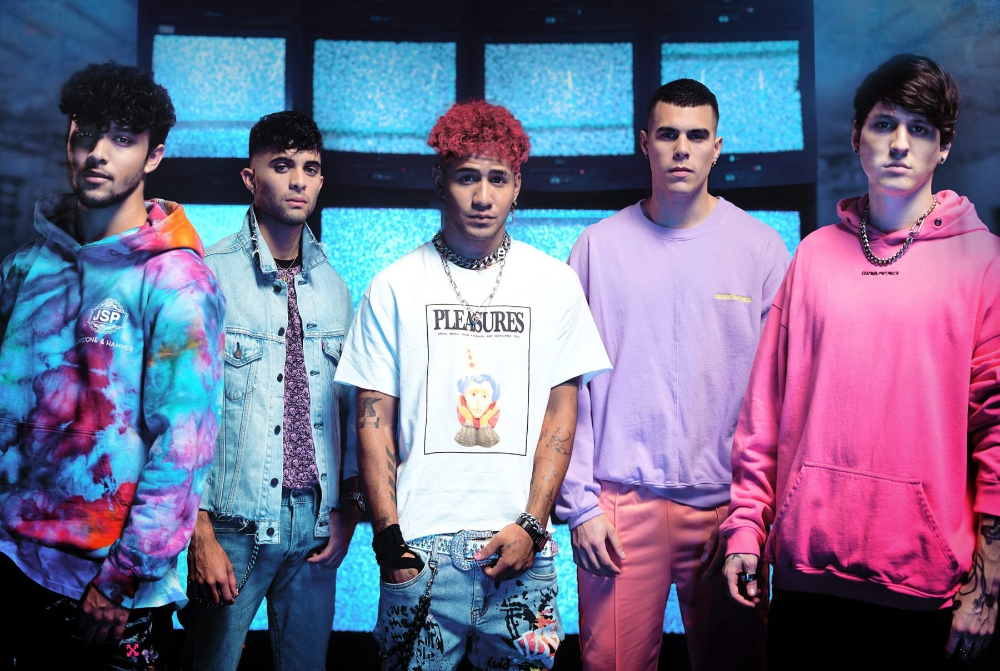
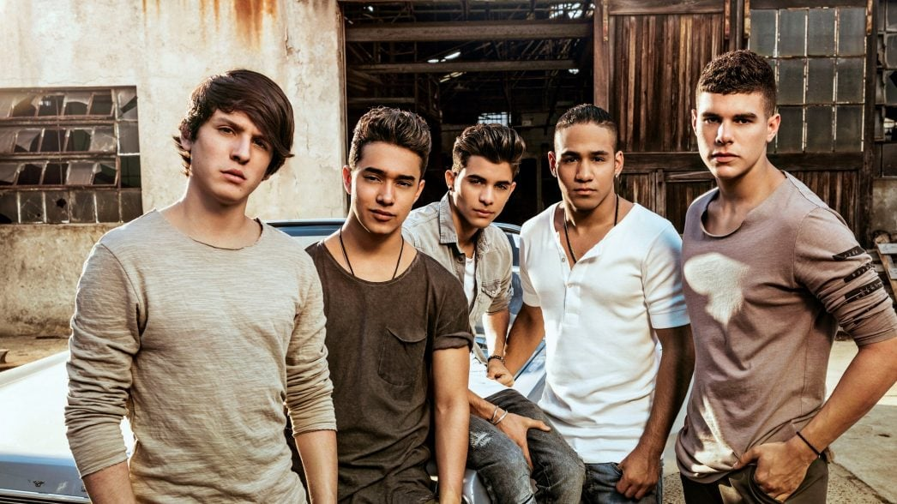

CNCO
CNCO fue un grupo musical hispanoamericano de reggaeton formado en Miami el 13 de diciembre de 2015 por los ganadores de la primera
temporada de La Banda, un programa de televisión emitido ese año por la cadena estadounidense de habla hispana Univision.
Discografía
- 2016: Primera cita
- 2018: CNCO
- 2019: Que quiénes somos
- 2021: Déjà Vu
- 2022: XOXO
Integrantes
- Richard Camacho
- Christopher Vélez
- Erick Brian Colón
- Zabdiel de Jesús
- Joel Pimentel

